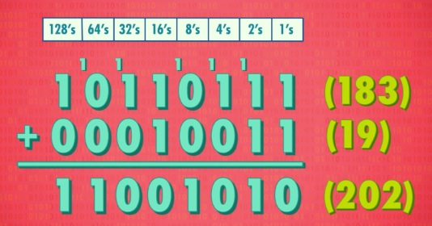

i.e. Representing Numbers and Letters with Binary
今天，我们讲计算机如何存储和表示数字，所以会有一些数学，不过别担心，你们的数学水平绝对够用了。
上集我们讲了，怎么用晶体管（transistors）做逻辑门（logic gates），逻辑门可以判断布尔语句，布尔代数只有两个值：True 和 False 。
但如果只有两个值，我们怎么表达更多东西 ❓ 这就需要数学了！
进制和运算
上集提到，1 个二进制值可以代表 1 个数，我们可以把真和假 ，当做 1 和 0 。如果想表示更多东西，加位数就行了。和我们熟悉的十进制（decimal）一样，十进制只有 10 个数（0 到 9），要表示大于 9 的数，加位数就行了。
二进制也可以这样玩。
拿 263 举例，这个数字 “实际” 代表什么？2 个 100、6 个 10、3 个 1，加在一起，就是 263。注意每列有不同的乘数 - 100、10、1 ，每个乘数都比右边大十倍，因为每列有 10 个可能的数字（0 到 9），如果超过 9，要在下一列进 1 ，因此叫 “基于十的表示法” 或 十进制。
二进制也一样，只不过是基于 2 而已。因为二进制只有两个可能的数， 1 和 0 ，意味着每个乘数必须是右侧乘数的两倍，就不是之前的 100、10、1 ，而是 4、2、1 。
拿二进制数 101 举例，意味着有 1 个 “4”、 0 个 “2 、1 个 “1”，加在一起，得到十进制的 5 。
为了表示更大的数字，二进制需要更多位数。拿二进制数 10110111 举例，我们可以用相同的方法转成十进制 - 1 x 128 ，0 x 64 ，1 x 32 ，1 x 16，0 x 8 ，1 x 4 ，1 x 2 ，1 x 1 ，加起来等于 183。
二进制数的计算也不难。
以十进制数 183 加 19 举例，首先 3 + 9，得到 12，然后位数记作 2，向前进 1，现在算 8+1+1=10，所以位数记作 0，再向前进 1，最后 1+1=2，位数记作 2，所以和是 202。
二进制也一样。
和之前一样，从个位开始，1+1=2，在二进制中也是如此，但二进制中没有 2，所以位数记作 0 ，进 1。就像十进制的例子一样，1+1，再加上进位的 1，等于 3，用二进制表示是 11。所以位数记作 1，再进 1，以此类推，最后得到这个数字，跟十进制 202 是一样的。
= 二进制中，逢二进一。
位和字节
二进制中，一个 1 或 0 叫一 “位”（bit）。
上个例子我们用了 8 位 , 8 位能表示的最小数是 0, 8 位都是 0，最大数是 255，8 位都是 1，能表示 256 个不同的值，2 的 8 次方。你可能听过 8 位机，8 位图像，8 位音乐，意思是计算机里大部分操作都是 8 位 8 位这样处理的。但 256 个值不算多，意味着 8 位游戏只能用 256 种颜色。
8 位是如此常见，以至于有专门的名字： 字节（byte） ❗
1 字节 = 8 位
1 bytes = 8 bits
如果有 10 个字节，意味着有 80 位。你听过 千字节（KB）兆字节（MB）千兆字节（GB）等等。不同前缀代表不同数量级，就像 1 千克 = 1000 克，1 千字节 = 1000 字节，或 8000 位。Mega 是百万字节（MB）, Giga 是十亿字节（GB）。如今你可能有 1 TB 的硬盘，8 万亿个 1 和 0。等等，我们有另一种计算方法 - 二进制里，1 千字节 = 2 的 10 次方 = 1024 字节。1000 也是千字节（KB）的正确单位，1000 和 1024 都对。
你可能听过 32 位 或 64 位计算机，你现在用的电脑几乎肯定是其中一种，意思是 一块块处理数据，每块是 32 位或 64 位，这可是很多位。32 位能表示的最大数，是 43 亿左右 - 也就是 32 个 1，所以 Instagram 照片很清晰，它们有上百万种颜色，因为如今都用 32 位颜色。当然，不是所有数都是正数，比如我上大学时的银行账户 T_T ……
= CPU 一次性读取的位数。
数的表示
我们需要有方法表示正数（positive）和负数（negative），大部分计算机用第一位表示正负 ：1 是负，0 是正。用剩下 31 位来表示符号外的数值，能表示的数的范围大约是正 20 亿到负 20 亿。虽然是很大的数，但许多情况下还不够用，全球有 70 亿人口，美国国债近 20 万亿美元。所以 64 位数很有用，64 位能表达最大数大约是 9.2 × 10 ^ 18，希望美国国债在一段时间内不会超过这个数！
重要的是（我们之后的视频会深入讲），计算机必须给内存（memory）中每一个位置，做一个 “标记”，这个标记叫 “地址”（addresses）（也叫‘位址’）, 目的是为了方便存取（store and retrieve）数据。如今硬盘已经增长到 GB 和 TB，上万亿个字节！内存地址也应该有 64 位。
除了负数和正数，计算机也要处理非整数（not whole numbers），比如 12.7 和 3.14，或"星历 43989.1” - 这叫 浮点数（floating point numbers）。因为小数点可以在数字间浮动，有好几种方法 表示浮点数，最常见的是 IEEE 754 标准，你以为只有历史学家取名很烂吗？它用类似科学计数法的方法，来存十进制值，例如，625.9 可以写成 0.6259 × 10 ^ 3 ，这里有两个重要的数：.6259 叫 “有效位数”（significand） , 3 是指数（exponent）。
> 计算机中浮点数的表示方法
在 32 位浮点数中，第 1 位表示数的符号 —— 正或负，接下来 8 位存指数，剩下 23 位存有效位数。
= 以上为正、负 & 整数、浮点数在计算机中的表示，‘数’的表示任务已达成 🎉
字符的表示
好了，聊够数了，但你的名字是字母（letters）组成的 ！所以我们也要表示文字（text），与其用特殊方式来表示字母，计算机可以用数表示字母 - 最直接的方法是给字母编号：A 是 1，B 是 2，C 是 3，以此类推。
> 人才啊·培根
著名英国作家 弗朗西斯·培根（Francis Bacon），曾用 5 位序列 来编码英文的 26 个字母。在十六世纪传递机密信件，五位（bit）可以存 32 个可能值（2^5） - 这对 26 个字母够了，但不能表示 标点符号，数字和大小写字母。
= 在内存中，字符也是用数字表示的，本质上是一张数字与字符一一对应的编码表！
ASCII，美国信息交换标准代码（the American Standard Code for Information Interchange），发明于 1963 年，ASCII 是 7 位代码，足够存 128 个不同值。范围扩大之后，可以表示大写字母，小写字母，数字 0 到 9, @ 这样的符号，以及标点符号（punctuation marks）。举例，小写字母 a 用数字 97 表示，大写字母 A 是 65，: （colon）是 58， ) 是 41。
| a | A | : | ) |
|---|---|---|---|
| 97 | 65 | 58 | 41 |
ASCII 甚至有特殊命令符号，比如换行符（newline），用来告诉计算机换行。在老计算机系统中，如果没换行符，文字会超出屏幕。
因为 ASCII 是个很早的标准，所以它被广泛使用，让不同公司制作的计算机，能互相交换数据，这种通用交换信息的能力叫 “互操作性”。但有个限制：它是为英语设计的。
幸运的是，一个字节有 8 位，而不是 7 位，128 到 255 的字符渐渐变得常用，这些字符以前是空的，是给各个国家自己 “保留使用的” 。在美国，这些额外的数字主要用于编码附加符号，比如数学符号，图形元素和常用的重音字符。另一方面，虽然拉丁字符被普遍使用，在俄罗斯，他们用这些额外的字符表示西里尔字符，而希腊电脑用希腊字母，等等。这些保留下来给每个国家自己安排的空位，对大部分国家都够用，问题是，如果在土耳其电脑上打开拉脱维亚语 写的电子邮件，会显示乱码。
> 8 位远远不够啊。..
随着计算机在亚洲兴起，这种做法彻底失效了，中文和日文这样的语言有数千个字符，根本没办法用 8 位来表示所有字符！为了解决这个问题，每个国家都发明了多字节编码方案，但相互不兼容，日本人总是碰到编码问题，以至于专门有词来称呼：“mojibake” 意思是 乱码。
所以 Unicode 诞生了 - 统一所有编码的标准。设计于 1992 年，解决了不同国家不同标准的问题，Unicode 用一个统一编码方案，最常见的 Unicode 是 16 位的，有超过一百万个位置，对所有语言的每个字符都够了，100 多种字母表加起来占了 12 万个位置，还有位置放数学符号，甚至 Emoji 。
就像 ASCII 用二进制来表示字母一样，其他格式 - 比如 MP3 或 GIF，用二进制编码声音/颜色，表示照片，电影，音乐。重要的是，这些标准归根到底是一长串位 。短信，这个 YouTube 视频，互联网上的每个网页，甚至操作系统，只不过是一长串 1 和 0 。
下周，我们会聊计算机怎么操作二进制，初尝"计算"的滋味。
感谢观看，下周见。
----------------
你可以在我的另一篇博文中了解更多关于字符编码的知识 – 《字符集和字符编码》 。